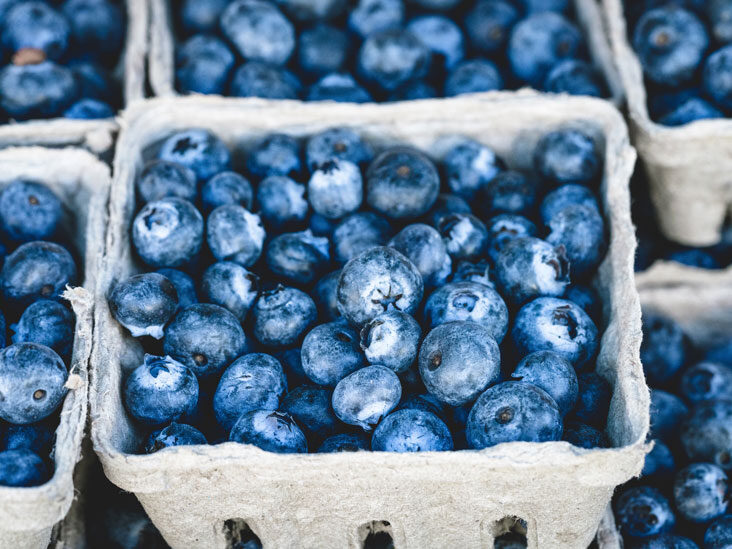
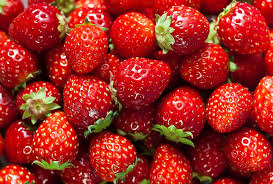

The Smoothie Bean
Fresh Smoothies & Smooth Coffee
Fruits are high in antioxidants and other beneficial ingredients.
Check out some of the healthiest fruits below!

Blueberries are high in the antioxidants flavonoids.
Click here for more information
Kiwi contain many vitamins and is also high in fiber.
Click here for more information
Mangos are full of nutrients, specifically vitamin C.
Click here for more information

Strawberries are rich in antioxidants and full of fiber.
Click here for more information
Vitamins and antioxidants can do amazing things for your body!